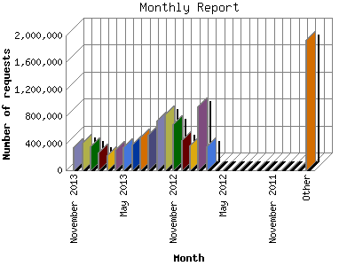

The Monthly Report identifies activity for each month in the report
time frame. Remember that each page hit can result in several server requests
as the images for each page are loaded.
Note: Depending on the
report time frame, the first and last months may not represent a complete
month's worth of data, resulting in lower hits.

| Month | Number of requests | Number of page requests | |
|---|---|---|---|
| 1. | January 2008 | 154,975 | 5,845 |
| 2. | February 2008 | 154,931 | 6,157 |
| 3. | March 2008 | 142,826 | 5,874 |
| 4. | April 2008 | 135,823 | 5,563 |
| 5. | May 2008 | 144,187 | 6,066 |
| 6. | June 2008 | 121,304 | 5,577 |
| 7. | July 2008 | 121,956 | 6,379 |
| 8. | August 2008 | 88,713 | 5,002 |
| 9. | September 2008 | 51,719 | 3,415 |
| 10. | October 2008 | 51,678 | 3,667 |
| 11. | November 2008 | 47,209 | 3,360 |
| 12. | December 2008 | 44,759 | 3,272 |
| 13. | January 2009 | 55,819 | 3,503 |
| 14. | February 2009 | 106,419 | 5,153 |
| 15. | March 2009 | 103,314 | 5,228 |
| 16. | April 2009 | 87,694 | 4,522 |
| 17. | May 2009 | 89,733 | 4,926 |
| 18. | June 2009 | 107,896 | 5,667 |
| 19. | July 2009 | 120,236 | 6,572 |
| 20. | August 2009 | 0 | 0 |
| 21. | September 2009 | 0 | 0 |
| 22. | October 2009 | 0 | 0 |
| 23. | November 2009 | 0 | 0 |
| 24. | December 2009 | 0 | 0 |
| 25. | January 2010 | 0 | 0 |
| 26. | February 2010 | 0 | 0 |
| 27. | March 2010 | 0 | 0 |
| 28. | April 2010 | 0 | 0 |
| 29. | May 2010 | 0 | 0 |
| 30. | June 2010 | 0 | 0 |
| 31. | July 2010 | 0 | 0 |
| 32. | August 2010 | 0 | 0 |
| 33. | September 2010 | 0 | 0 |
| 34. | October 2010 | 0 | 0 |
| 35. | November 2010 | 0 | 0 |
| 36. | December 2010 | 0 | 0 |
| 37. | January 2011 | 0 | 0 |
| 38. | February 2011 | 0 | 0 |
| 39. | March 2011 | 0 | 0 |
| 40. | April 2011 | 0 | 0 |
| 41. | May 2011 | 0 | 0 |
| 42. | June 2011 | 0 | 0 |
| 43. | July 2011 | 0 | 0 |
| 44. | August 2011 | 0 | 0 |
| 45. | September 2011 | 0 | 0 |
| 46. | October 2011 | 0 | 0 |
| 47. | November 2011 | 0 | 0 |
| 48. | December 2011 | 0 | 0 |
| 49. | January 2012 | 0 | 0 |
| 50. | February 2012 | 0 | 0 |
| 51. | March 2012 | 0 | 0 |
| 52. | April 2012 | 0 | 0 |
| 53. | May 2012 | 0 | 0 |
| 54. | June 2012 | 0 | 0 |
| 55. | July 2012 | 350,434 | 303,292 |
| 56. | August 2012 | 945,089 | 822,999 |
| 57. | September 2012 | 372,958 | 287,534 |
| 58. | October 2012 | 451,859 | 202,777 |
| 59. | November 2012 | 685,180 | 93,310 |
| 60. | December 2012 | 829,028 | 191,512 |
| 61. | January 2013 | 743,107 | 183,662 |
| 62. | February 2013 | 526,158 | 185,686 |
| 63. | March 2013 | 487,841 | 158,860 |
| 64. | April 2013 | 387,424 | 103,071 |
| 65. | May 2013 | 344,684 | 49,437 |
| 66. | June 2013 | 298,239 | 41,707 |
| 67. | July 2013 | 228,217 | 42,835 |
| 68. | August 2013 | 262,553 | 54,657 |
| 69. | September 2013 | 358,424 | 109,264 |
| 70. | October 2013 | 414,310 | 129,896 |
| 71. | November 2013 | 339,446 | 104,969 |
Most active month August 2012 : 822,999 pages sent. 945,089 requests handled.
Monthly average: 87,811 pages sent. 276,559 requests handled.
This report was generated on November 26, 2013 02:18.
Report time frame January 4, 2008 22:03 to November 25, 2013 23:59.
| Web statistics report produced by: analog 5.1 / Report Magic 2.21 |